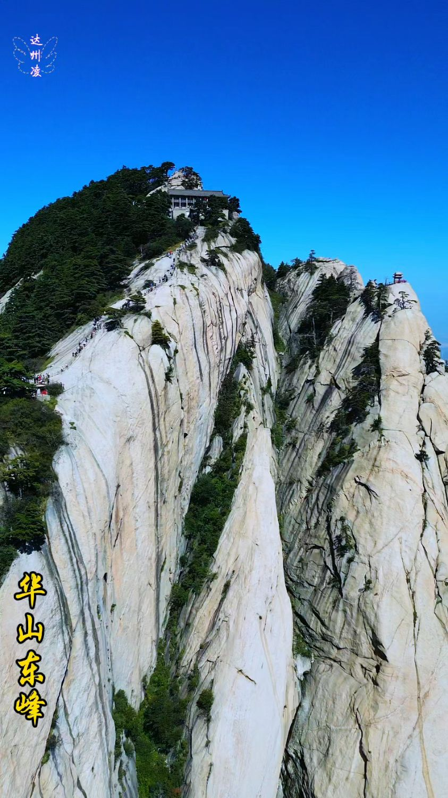
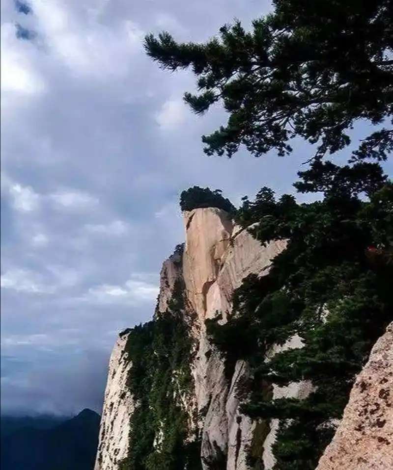
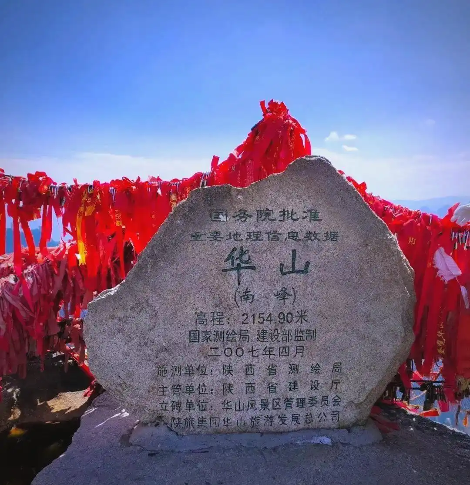
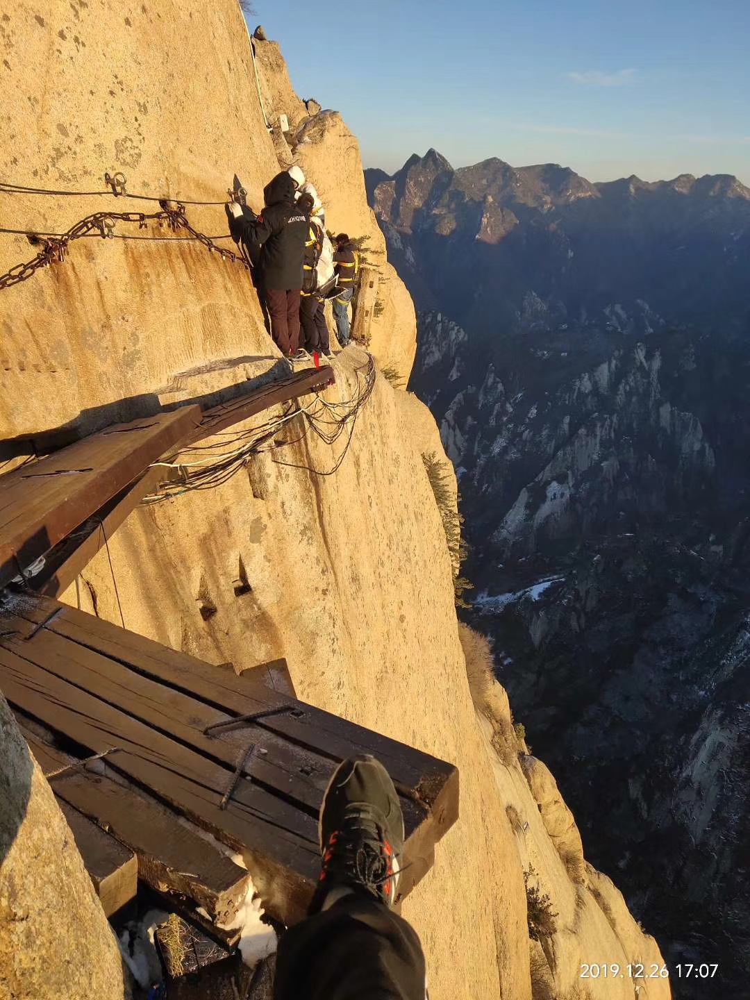

华岳仙掌
所在山脉
西岳华山（秦岭东段）
主峰海拔
2154.9 米（南峰）
距西安
约 120 公里
地位
五岳之西岳 / 中华十大名山
关中八景之首
在关中八景中，"华岳仙掌"位列第一。所谓"仙掌"，指的是华山东峰（朝阳峰）东北侧的一处巨大天然石壁。这面石壁高达数十米，岩体裸露，色泽浅黄，在旭日东升之时，阳光斜照其上，光影交错间呈现出宛如巨人手掌的壮观景象——五指分明，纹理清晰，仿佛一只巨掌从山体中伸出，直指苍穹。
科学上，"仙掌"是花岗岩体沿节理面风化剥蚀后形成的自然地质景观。但在民间传说中，这只"巨掌"的来历更为动人：相传古时华山与中条山本为一体，阻挡了黄河东流。巨灵神奉玉帝之命，以双手掰开两山，黄河才得以东流入海。华山东峰上留下的"掌印"，便是巨灵神用力时留下的手痕。这一传说记录在《水经注》中："华岳本一山当河，河水过而曲行。河神巨灵，手荡脚踏，开而为两。"

华山概览
华山为五岳之西岳，位于陕西省华阴市，距西安约120公里。山体由巨大的花岗岩岩株构成，以"险"著称于世——"自古华山一条路"绝非虚言。华山共有五座主峰：东峰（朝阳峰，观日出最佳）、南峰（落雁峰，最高峰2154.9米）、西峰（莲花峰，沉香劈山救母传说发生地）、北峰（云台峰，索道终点）和中峰（玉女峰）。其中东峰即为"华岳仙掌"所在地。
华山是道教全真派圣地，山上有道观20余座。历代文人墨客竞相登临——李白登上华山感叹"西岳峥嵘何壮哉"，杜甫则有《望岳》诗篇。金庸武侠小说中"华山论剑"更是将这座山推向了华人文化的顶峰。华山1982年被列为首批国家级风景名胜区，2011年被评为国家AAAAA级旅游景区。
图片画廊



参观信息
| 地址 | 陕西省渭南市华阴市华山镇 |
|---|---|
| 开放时间 | 全天开放（索道 07:00—19:00 运营） |
| 门票 | 旺季 180 元 / 淡季 100 元（不含索道） |
| 交通 | 西安北站乘高铁至华山北站（约30分钟），出站换乘免费公交至游客中心 |
| 小贴士 | "仙掌"景观最佳观赏时间为清晨日出时分（东峰）；体力一般者建议"西上北下"索道路线；夜爬华山看日出是经典玩法，需备足保暖衣物和头灯 |